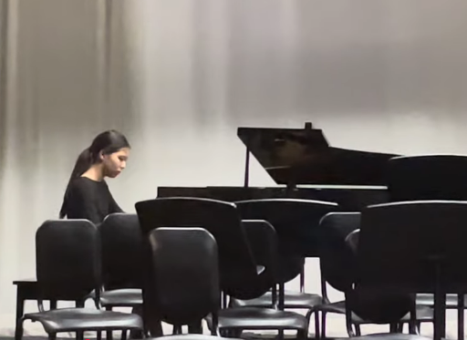
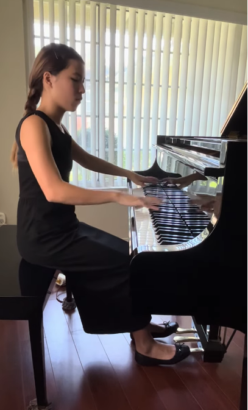
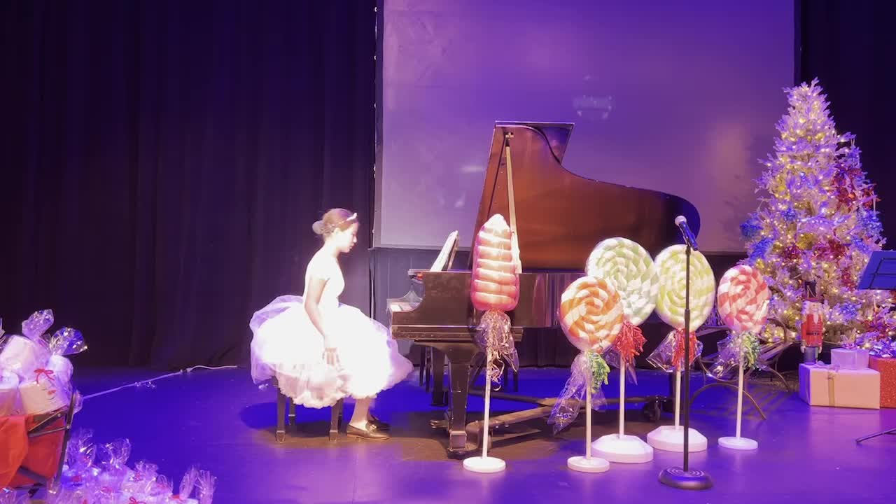

Franz Schubert
Impromptu No. 2 in E♭ Major, Op. 90, D. 899
Learning a piece has taught me to be patient with the process. I’ve learned that small improvements, repeated over time, are what eventually bring the music together.

Impromptu No. 2 in E♭ Major, Op. 90, D. 899

Sonata No. 8 “Pathétique,” Op. 13, I

Music Angels Hands